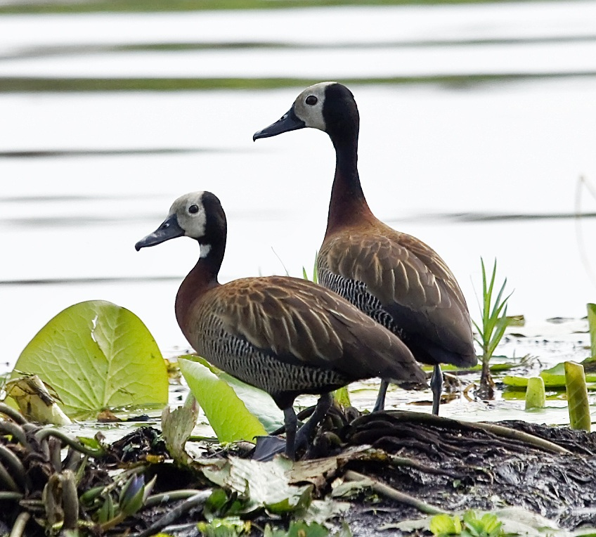

Oi! Essa é a página do projeto Irerê.
Irerê é um projeto de estudo dirigido à distância. Pareamos orientadores (alunos de pós graduação e pós-doutorandos voluntários) com alunos de graduação curiosos com pesquisa em matemática.
Sob a supervisão do orientador, as duplas se encontram semanalmente em reuniões apresentadas pelo orientando. Para mais detalhes, veja as abas acima.
Inscrições para a segunda edição (08-12/2026) até 08/08: orientandos / orientadores.